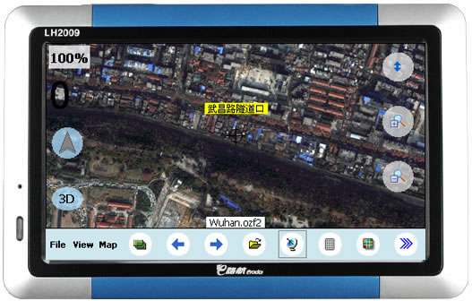
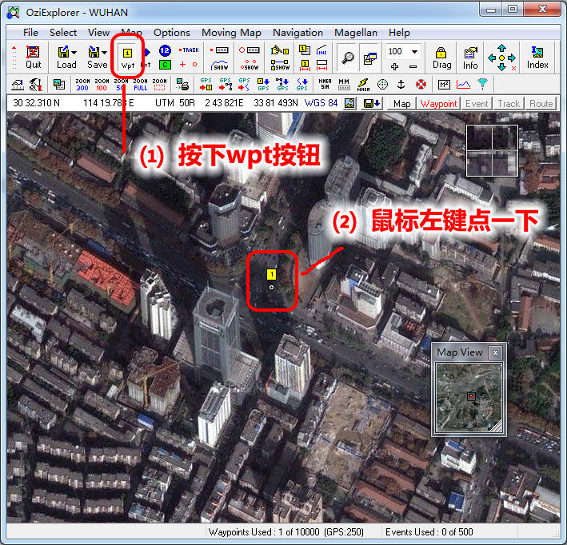
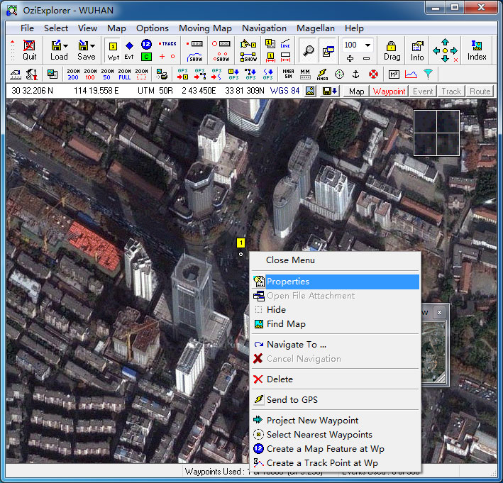
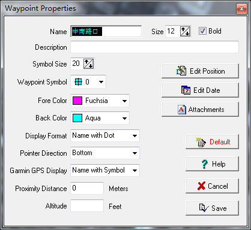
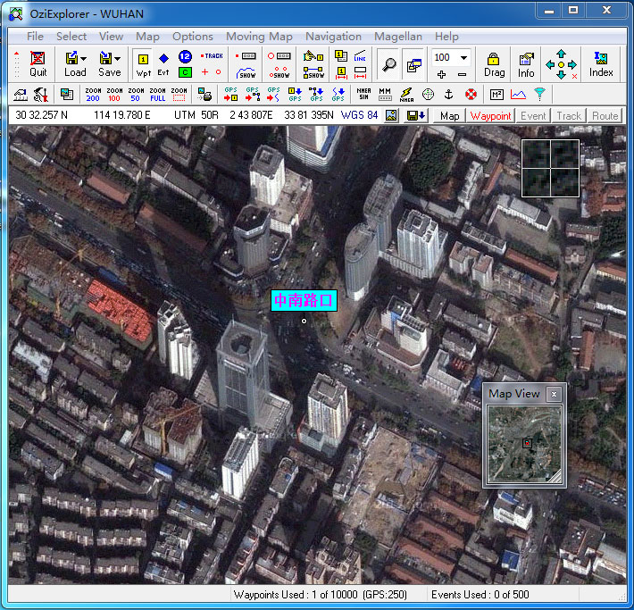
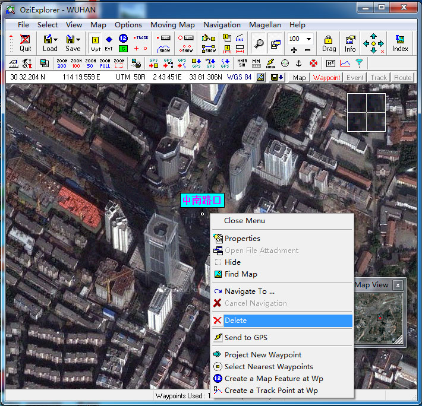
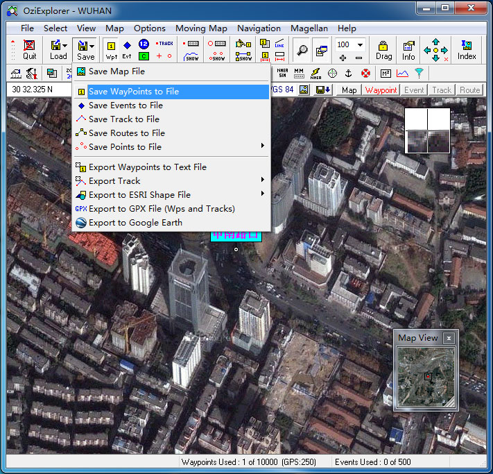
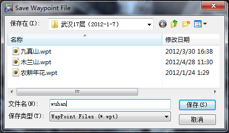
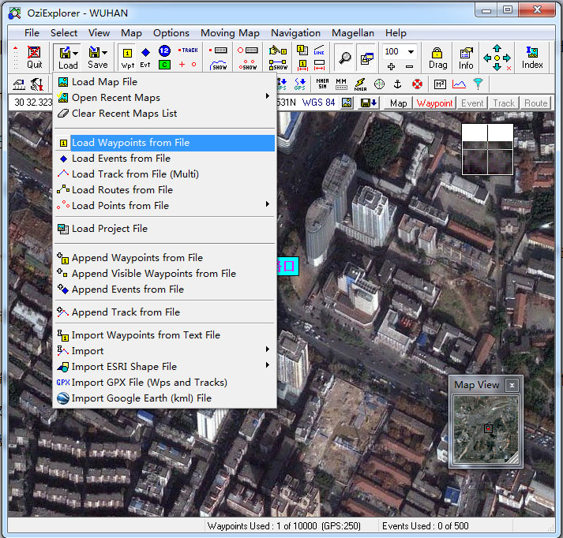
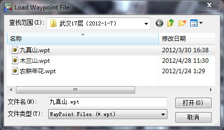

|
| 首页 | GeoTIFF | 今日花园Maps | OruxMaps | OZI | 资源 | 软件 | 联系 |
| 当前位置：OZI ---> OziExplorer航点文件的制作 |
OziExplorer航点文件的制作OziExplorer导航软件加载航点文件后，可以在地图上显示航点信息。如下图所示： |

|
OZI航点文件的制作必须在PC电脑版的OziExplorer软件上进行，航点文件的后缀是.wpt。制作步骤如下： 1）用PC电脑版的OziExplorer软件打开一幅OZI地图（校准过坐标参数的地图），然后按下工具栏上的wpt按钮，以后用鼠标左键在地图上点击一下就会生成一个黄色航点，如下图所示： |

|
2）用鼠标右键点击航点，弹出菜单中选择Properties(属性)，弹出属性对话窗。如下图所示： |

|
属性对话窗中可以设置名称、字体大小、前景色、背景色等属性。如下图所示： |

|
属性设置完成后，点击右下角的Save（保存）按钮，退出属性对话窗，航点的属性就改变了。如下图所示： |

|
3）用鼠标右键点击航点，弹出菜单中选择Delete(删除)，可以删除航点。如下图所示： |

|
4）按照上述方法，可在一幅地图上生成多个航点。所有的航点都生成后，点击工具栏上的Save按钮，选择“Save WayPoints to File”项，如下图所示： |

|
5）在弹出的保存对话窗中输入航点文件名称，点击“保存”按钮，就会生成一个后缀为.wpt的航点文件，如下图所示： |

|
6）如果有多幅OZI地图，是不是每幅OZI地图都要制作对应的航点文件呢？不是的。多幅OZI地图的航点信息可以保存在一个航点文件中。方法如下： a) 制作并生成第一幅OZI地图的航点文件。 b) 在制作第二幅OZI地图的航点文件之前，先加载第一幅地图的航点文件，如下图所示： |


|
c) 制作第二幅OZI地图的航点文件并保存，这样制作出来的航点文件同时包括了两幅地图的航点信息。 7）WINCE版OZI软件中导入航点文件：“File” --> “Waypoints(航点)” --> “Import Wp's from File(加载航点文件)” |
| www.todaygarden.net |
版权所有 2010-2020 今日花园 |